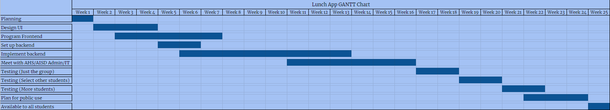

By: Layne Yarbrough and Shivanshi Das
Eagle Eats' mission is to make lunch faster and easier for both Allen ISD staff and students through the use of a lunch preorder business model.
Allen High School is a large school with a student body population of over 5,000 students. Despire having four lunch periods, the Allen ISD Student Nutrition department is far too understaffed to accommodate such a vast number of students in a reasonable amount of time with many students spending 10-15 minutes out their 30-minute lunch period just waiting for food. The problem is significant enough to where many teachers release students early, let them return to class late, or allow them to eat their lunch in class because even they acknowledge and understand the gravity of the problem. On a separate note, the menu on the Allen ISD website is inconsistent with its display of prices and nutrition information which most students would like to be aware of.
In response to this problem, we propose an application in which students have the option to order their lunch prior to their scheduled lunch time. The application would then gather the order data and categorize it once more in terms of which product it corresponds to. Given the assumption that the majority of the students will order prior to their lunch period, the application will ensure that the majority of the orders are categorized and sent to the staff by the time the lunch bell rings. On placing an order, the student will receive an order number such as B1 indicating that they are the first to place an order for B lunch. Once their order is ready for pick up, they will receive a notification and will walk up to their lunch line. At the moment, Allen ISD nutrition department uses ID scanning to order and pay for food, but with out system, the students will simply show the staff member their order number and pick up their food. With this system, we are forgoing the process of ordering in person and scanning IDs hence expediting the lunch process. Similar orders will be prompted to pick up their food at the same time such that the lunch staff can easily gather and distribute the orders. With this application, efficiency is the priority and the goal is to create a win-win situation for both the staff and students.
While the application is open to all Allen ISD students, it is targeted at students who frequently purchase lunch.
Getting students to use the application should not be too challenging, as most students will want to get their food as quickly as possible. Making the application work in the cafeteria could present challenges, since we are basically redesigning how students get their food. Currently, there is no lunch ordering app available for Allen High School students.
Our application will be a non-profit, so the only revenue we need is to cover the expenses. In terms of funding, we would like to ask the Allen ISD IT department to cover some of our minimal costs; however, should that not work out, we plan on fundraising through the Girls Who Code club by selling chocolates or something similar. Through this fundraiser, Girls Who Code members will receive hours and our application will receive funds, so it is a win-win situation.
We will communicate our services to our target market by posting promotional flyers in both the high school and the STEAM Center, even though the application will not be available at STEAM this year. We plan to make a short 1-2 minute advertisement which we will then send to AHS News and ask all Allen HS teachers to show the video to their students. In addition to traditional means of advertisement, we will also be marketing through social media channels such as Instagram and will set up a booth at the Allen ISD Earthfest, should time allow.
Our project will need a server to run the website on, which we could use a paid service for, or we could use GitHub Pages to host the website. Expenses for this could be setting up the paid web host or getting a domain name. Another option could be publishing the website to the Allen CS server. Another expense that would be needed would be the database manager, whether that be with AWS, Google Cloud, or another service.
To make this project work the best and most efficient ways possible, we would need people of various skills to help with the application. We would need graphic designers to help with the designing of each page and the user-interface. We would also need web programmers to program the pages of the website, where students would place their orders. A backend programming team would be responsible for managing the different databases that be required to store data for the app. These databases would store account information for each student, a log for signins, menus (with prices and nutrition information), orders, and scheduled orders.
We are planning to have the main UI and front page designed by week 3, so that the web programmers can begin working on the main page. Graphic design will continue working until about week 5 to design the other pages. Web programmers will continue working on making each page, and at week 5, backend will begin setting up databases. Hopefully by week 6, we will be able to start implementing the databases into the application, and we will continue working on that for a while, up to week 13. At week 11, we will need to have some people meet with Allen High School and/or Allen ISD Administrators to discuss the implementation of the application. Hopefully this can be finished by week 16, and then we can begin testing in two-week blocks, starting with just the members of the group, then to some more students that will be chosen at a later date, and then expanding testing to a larger group of students (like maybe an entire lunch block). At the same time, programming will be working to fix any bugs that are found during testing. After about 5 weeks total of testing, we will go back to meeting with Admin and planning how to best make the application public, which can hopefully be done by the end of April. The GANTT chart shows our estimated timeline.
